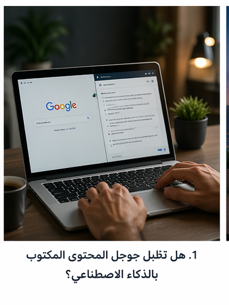
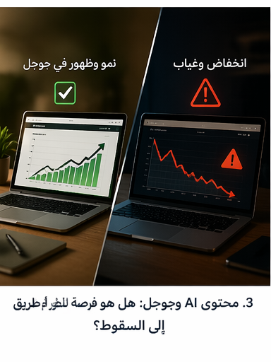
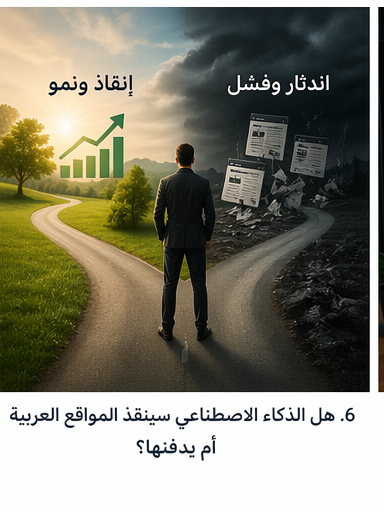

هل تقبل جوجل المحتوى المكتوب بالذكاء الاصطناعي؟ الحقيقة التي يتجاهلها كثيرون
تحليل عربي عملي يشرح موقف جوجل الحقيقي من محتوى AI، ولماذا المشكلة في الجودة لا في الأداة نفسها.
استعرض جميع المقالات المنشورة على smartafiliate – مقالات الذكاء الاصطناعي، أدوات AI، التسويق بالعمولة، ومسارات التعلم
إذا كنت لا تعرف من أين تبدأ، ابدأ بأفضل الأدوات أو انتقل مباشرة إلى مراجعة ChatGPT أو مسار التعلم.

تحليل عربي عملي يشرح موقف جوجل الحقيقي من محتوى AI، ولماذا المشكلة في الجودة لا في الأداة نفسها.
مقال تحليلي يشرح كيف يمكن للذكاء الاصطناعي أن يرفع مستوى المواقع العربية أو يغرقها في محتوى سريع متشابه.

متى يساعد محتوى AI موقعك على الظهور، ومتى يتحول إلى سبب لفقدان الثقة والترتيب؟
شرح واضح للحقيقة خلف فكرة العقوبة، ولماذا يتم تجاهل كثير من المحتوى الضعيف بدلًا من معاقبته مباشرة.
تحليل عملي لعلاقة الذكاء الاصطناعي بالسيو، ومتى ينجح المحتوى الآلي عندما يخدم نية البحث والقيمة الحقيقية.

مقال جاد يشرح كيف يمكن للذكاء الاصطناعي أن ينقذ مواقع عربية كثيرة أو يغرقها في سرعة بلا معنى.
من يملك الرؤية والجودة والثقة سيصمد، ومن يعتمد فقط على النشر السريع قد يختفي بسرعة.
كيف يمكن للأداة نفسها أن تصبح رافعة للنمو أو اختبارًا قاسيًا للبقاء حسب طريقة استخدامها.
مقال تعليمي جذاب يشرح كيف اختصر الذكاء الاصطناعي بناء المواقع من أيام وساعات إلى دقائق، مع مقارنة واضحة بين الماضي واليوم.
ملخص عملي لأبرز التحولات الحالية في الذكاء الاصطناعي، من الأمن السيبراني والبحث الذكي إلى البرمجة والبنية التحتية.

مقارنة عملية بين ChatGPT وJasper وCopy.ai وWritesonic. تعرف على الأداة الأنسب حسب نوع الاستخدام.
خطة عملية منظمة لبناء أصل رقمي واضح والانتقال من التعلم إلى أول نتائج قابلة للقياس خلال 3 أشهر.

خارطة تنفيذ سريعة تساعدك على الانتقال من الفكرة إلى أول محتوى وأول صفحة تحويل خلال شهر واحد.
أدوات عملية للمحتوى، التصميم، والتحليل تساعدك على بناء نظام أفلييت أسرع وأكثر وضوحًا.

نظام بسيط يربط أدوات الذكاء الاصطناعي بالمحتوى والتحويل والمبيعات بدل استخدامها بشكل متفرق.

شرح عملي لقمع التحويل من جذب الزيارة إلى القرار وكيف تبني صفحات لا تنتهي عند مجرد القراءة.

استراتيجية عملية لتحسين الصفحات الرابحة ورفع الثقة وزيادة النقرات بدل التوسع العشوائي.

شرح واضح للمبتدئين: ما هو الأفلييت، كيف تبدأ، وكيف تختار أول مجال وصفحة ومصدر زيارات.
تعرف على الأخطاء التي تمنع النمو وكيف تتجنبها عمليًا قبل أن تهدر الوقت والمجهود.
دليل مختصر لاختيار برامج أفلييت مناسبة للسوق العربي مع عوامل الاختيار الصحيحة للمبتدئ.
خطة متكاملة لتعلم الذكاء الاصطناعي من الصفر مع تركيز عملي على الأدوات والاستخدامات الفعلية.

كيف تبني مقالًا واضحًا يخدم SEO ويزيد الانتقال إلى الصفحات الأهم داخل الموقع.
مراجعة كاملة لـ ChatGPT: المميزات، العيوب، الخطط السعرية، وكيفية استخدامه بفعالية.
تحليل شامل لأداة Jasper AI المتخصصة في كتابة المحتوى التسويقي.
مراجعة كاملة لأداة Writesonic وميزاتها في كتابة المقالات الطويلة وتحسين SEO.
تعلم استخدام Midjourney لإنشاء صور فائقة الجودة، أفضل الإعدادات، والنصائح العملية.
تعرف على إمكانيات DALL-E 3 من OpenAI وكيفية استخدامه في مشاريعك.
كيف تستخدم ميزات الذكاء الاصطناعي في Canva لإنشاء تصاميم رائعة بسرعة.
أفضل خطوة بعد التصفح العام: انتقل الآن إلى مراجعة أو مقارنة أو صفحة أدوات واضحة بدل البقاء داخل الفهرس العام.